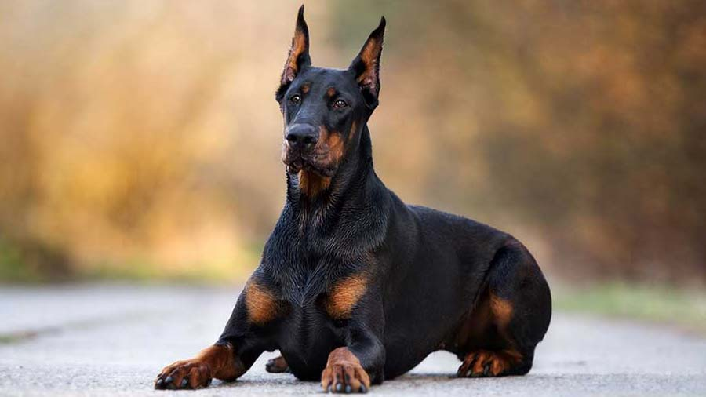

Golden Retriever
Obedient Dog Breed
.jpg)
Labrador
Faithful Dog Breed

Doberman Pinscher
Best Guard Dog Breed
Obedient Dog Breed
Faithful Dog Breed
Best Guard Dog Breed
Everything I Know, I learn From Dogs
.jpg)
The Siberian Husky is a medium-sized working sled dog breed. The breed belongs to the Spitz genetic family. It is recognizable by its thickly furred double coat, erect triangular ears, and distinctive markings, and is smaller than the similar-looking Alaskan Malamute. Siberian Huskies originated in Northeast Asia where they are bred by the Chukchi people of Siberia for sled pulling, and companionship. It is an active, energetic, resilient breed, whose ancestors lived in the extremely cold and harsh environment of the Siberian Arctic. William Goosak, a Russian fur trader, introduced them to Nome, Alaska, during the Nome Gold Rush, initially as sled dogs to work the mining fields and for expeditions through otherwise impassable terrain.
More.jpg)
The Bulldog is a British breed of dog of mastiff type. It may also be known as the English Bulldog or British Bulldog. It is a medium sized, muscular dog of around 40–55 lb (18–25 kg). They have large heads with thick folds of skin around the face and shoulders, and a relatively flat face with a protruding lower jaw. The breed has significant health issues as a consequence of breeding for its distinctive appearance, including brachycephalia, hip dysplasia, heat sensitivity, and skin infections. Due to concerns about their quality of life, breeding Bulldogs is illegal in Norway and the Netherlands.
More.jpg)
The German Shepherd is a German breed of working dog of medium to large size. The breed was developed by Max von Stephanitz using various traditional German herding dogs from 1899. It was originally bred as a herding dog, for herding sheep. It has since been used in many other types of work, police work, and warfare. It is commonly kept as a companion dog, and according to the Fédération Cynologique Internationale had the second-highest number of annual registrations in 2013.
MoreOmega-3 dog supplements are a beneficial addition to a canine's diet. Packed with essential fatty acids, such as EPA and DHA, these supplements promote overall health and well-being in dogs. Omega-3s play a crucial role in supporting healthy skin and a lustrous coat, aiding in the management of allergies and skin conditions. Additionally, they contribute to joint health, reducing inflammation and supporting mobility, which is especially beneficial for aging or active dogs. Furthermore, omega-3s offer cognitive benefits by supporting brain function and promoting mental sharpness. These supplements are often derived from fish oil or algae, ensuring a safe and sustainable source of this vital nutrient. Including omega-3 dog supplements as part of a balanced diet can enhance a dog's vitality and contribute to their overall quality of life.
TO BUYNUPRO all-natural dog supplement is a high-quality dietary addition designed to optimize the health and vitality of dogs. Made from a blend of nutrient-rich ingredients, NUPRO provides a comprehensive range of essential vitamins, minerals, and antioxidants that support overall well-being. This supplement promotes a shiny coat and strong nails while bolstering the immune system and boosting energy levels. NUPRO's natural formulation includes ingredients like flaxseed, Norwegian kelp, and nutritional yeast, which are known for their beneficial properties. It is free from artificial additives and fillers, ensuring a pure and wholesome supplement for dogs. Whether your dog is young or old, NUPRO all-natural dog supplement can be a valuable addition to their diet, helping to improve their overall health and maintain their vibrant spirit.
TO BUYInsideOut Pre-Probiotics is a cutting-edge dog supplement that focuses on promoting optimal digestive health. This specially formulated blend of prebiotics and probiotics is designed to support the growth of beneficial gut bacteria, which plays a crucial role in maintaining a healthy digestive system. InsideOut Pre-Probiotics help improve nutrient absorption, enhance immune function, and aid in preventing digestive upsets such as diarrhea and constipation. By providing a balanced and diverse microbiome, this supplement helps maintain the delicate balance of bacteria in the gut, ensuring proper digestion and overall well-being for dogs. With its all-natural ingredients and scientifically backed formulation, InsideOut Pre-Probiotics offers a safe and effective way to support digestive health in dogs, keeping their tummies happy and their bodies in top condition.
TO BUYAs a highly skilled and compassionate veterinary surgeon, I am dedicated to providing exceptional medical care to animals. With a comprehensive background in veterinary medicine, I possess a deep understanding of animal health, diagnostics, and surgical procedures. I am proficient in performing a wide range of surgeries, both routine and complex, with precision and care. Additionally, I excel in diagnostic examinations, developing treatment plans, and delivering compassionate care to patients. I am committed to staying current with advancements in veterinary medicine and continuously expanding my knowledge and skills. With strong communication and interpersonal abilities, I effectively collaborate with pet owners, ensuring they are well-informed and involved in their pet's healthcare journey.
MORE ABOUT MEAs a skilled veterinary surgeon, I am committed to providing exceptional medical care to animals. With a solid foundation in veterinary medicine, I have a comprehensive understanding of animal health, diagnostics, and surgical procedures. I am proficient in performing a wide range of surgeries, including both routine and complex cases. My strong diagnostic abilities enable me to accurately assess and diagnose various health conditions in animals. I am dedicated to staying updated on the latest advancements in veterinary medicine, continuously expanding my knowledge and skills. With excellent communication and interpersonal skills, I establish strong relationships with pet owners, ensuring effective communication and collaboration for optimal patient care. I am passionate about improving animal welfare and delivering compassionate veterinary services.
MORE ABOUT MEExperienced and compassionate veterinary surgeon dedicated to providing exceptional care for animals. Proficient in all aspects of veterinary medicine, including surgical procedures, diagnostics, and preventative care. Skilled in performing a wide range of surgeries, from routine to complex cases, with precision and attention to detail. Strong diagnostic abilities enable accurate assessment and treatment of various health conditions. Adept at building rapport with pet owners, ensuring clear communication and collaborative decision-making. Continuously staying abreast of advancements in veterinary medicine to deliver the highest standard of care. Committed to promoting animal welfare and fostering the well-being of every patient.
MORE ABOUT ME